HelloAI —— 让不同厂商的 AI 组成一支团队
一个开源的 A2A 协作平台：让 Qoder / Trae / Codex CLI / Claude Code 等异构 AI Agent 跨终端组成团队，协同完成复杂任务。
算力上限不取决于你的服务器，而取决于你有多少台终端。
你在日常工作中是不是也遇到过这种情况：想让 AI 帮你完成一个稍微复杂的任务，但它要么中途"跑偏"，要么在某个环节反复出错，你必须全程盯着、反复纠正？
HelloAI 的思路不一样。你把需求告诉它，它先追问澄清你的真实意图，然后把任务拆成带依赖的子任务，跨终端派给最合适的 AI 并行执行——不合格的 AI 质检员会带着具体修改意见打回重做，最后整合成一份完整交付。全程你只说一次需求、点一次确认。
你说需求 → Planner 澄清 + 拆解 → 跨终端多 AI 并行执行 → AI 质检员验收 → 整合交付
干活的 AI 不必是同一厂商、不必在同一台机器上、也不必改一行代码。 Qoder / Trae / Codex CLI / Claude Code——任何一台终端上的任何一款 AI 助手，经 MCP 协议接入后即成为平台里的"数字员工"。
💎 为什么是 HelloAI？
为什么需要一支 AI 团队？
随着 AI Agent 的快速发展，一个新的问题开始出现：
一个 Agent
│
├── 会写代码
├── 会搜索
├── 会分析
├── 会执行命令
└── 会调用工具
但当任务进一步复杂：
开发一个完整业务功能
│
├── 需求分析
├── 技术方案
├── 数据库设计
├── Backend
├── Frontend
├── 测试
└── Code Review
让一个 Agent 独立完成所有事情并不一定是最佳方案。
HelloAI 希望把多个 Agent 组织起来：
Complex Task
│
▼
Planner
│
┌──────────┼──────────┐
│ │ │
▼ ▼ ▼
Backend Frontend Research
Agent Agent Agent
│ │ │
└──────────┼──────────┘
▼
Reviewer
│
▼
Final Result
这意味着：
AI 不再只是一个"聊天机器人"，而是一支可以被组织、调度、监督和复用的数字团队。
行业分工：我们补的是最缺的那一段
| 层次 | 解决什么问题 | 现状 |
|---|---|---|
| Agent ↔ 工具 | 让 Agent 会查库、调 API、读写文件 | ✅ MCP 已成事实标准 |
| Agent ↔ Agent | 让不同厂商的 Agent 互相发现、通信、委派 | ⚠️ 协议已有，但落地机制仍缺 |
| 团队 ↔ 任务 | 让一群异构 Agent 像一支团队交付同一个任务 | ✅ HelloAI 在这里 |
诚实说明：HelloAI 不是 A2A 协议规范的实现，Agent 接入走 MCP。A2A 所需的语义（能力发现 / 任务委派 / 结果回执 / 长任务与人工介入）由平台自己的角色模型 + 子任务状态机 + 统一事件流承载。我们补的是协作机制，不是又一个协议。
算力形态：从"一台服务器"到"你的每一台终端"
| 传统单机 / 容器化多 Agent | HelloAI 分布式终端调度 | |
|---|---|---|
| 算力上限 | 单台服务器的 CPU / 显存 / JVM 堆 | 聚合 N 台终端的碎片化算力，终端越多池越大 |
| Agent 生态 | 框架内自研 Agent / 同生态节点 | 跨终端、跨产品：Qoder / Trae / Codex CLI / Claude Code 免改造接入 |
| 扩容方式 | 升级硬件 / 改造成集群 | 多开一台终端 + 粘贴一段 SKILL 即完成"扩容" |
| 协作方式 | 进程内调用，强绑定框架 | MCP 协议标准化通信（打卡 / 领任务 / 执行 / 提交 / 心跳） |
| 跨产品协作 | 各产品间互不相通 | 同一主任务的子任务可由不同终端上的不同厂商 AI 接力完成 |
与主流方案的定位差异
| CrewAI / LangGraph | Dify | HelloAI | |
|---|---|---|---|
| 关注点 | 如何写 Agent（框架） | LLM 应用工作流编排 | 如何管 Agent：调度、验收、审计 |
| 算力形态 | 单机 / 容器内 | 平台节点内 | 分布式终端聚合 |
| 技术生态 | Python | Python | Java 企业级（Spring Boot） |
| 外部 Agent 接入 | 按框架 API 开发 | 限于平台内节点 | MCP 协议，CLI Agent 免改造接入 |
| 质量闭环 | 自行实现 | 工作流内自行拼装 | 内置 Reviewer 双轨审核 + 多轮驳回返工 + 死信兜底 |
| 执行可追踪 | 日志为主 | 流程编排视图 | 依赖 DAG / 时间线 / 时序图 / 质量看板 |
| 部署形态 | 库 / 服务 | SaaS / 私有部署 | Docker Compose 完全私有化 |
🎬 它怎么工作？（30 秒版）
你：帮我实现一个订单支付模块
HelloAI：追问澄清 → 拆解为带依赖的子任务草案 → 你确认 → 跨终端派活
API设计 ──→ Backend ──→ 测试 ──→ Review
(Qoder) (Codex) (Claude) (平台内 LLM)
不合格 → 带着修改意见打回重做
合格 → 整合为完整交付 + zip 下载
你只需要做两件事：描述需求 + 确认草案。其余全部自动流转。

平台任务调度工作流
从一句需求到完整交付的完整链路——六阶段、三角色协同，节点标注均为代码实况（TaskStatus / SubTaskStatus / 关键类）：
可拖拽平移 · 滚轮缩放 · 悬停高亮关联节点 · 点击节点看详情 · 右上角「主题」切换明暗
平台三级状态机
主任务、子任务、最终整合报告三张状态机各自收敛，经 ①②③ 联动；每张状态机的合法迁移表都是唯一裁判：
可拖拽平移 · 滚轮缩放 · 悬停高亮关联节点 · 点击节点看详情 · 右上角「主题」切换明暗
三种角色的工作流与状态机
Planner（规划者）——双模澄清 → 六字段需求包 → 能力感知拆解 → 人工确认草案：
可拖拽平移 · 滚轮缩放 · 悬停高亮关联节点 · 点击节点看详情 · 右上角「主题」切换明暗
Executor（执行者）——值班打卡 → 认领执行 → 提交审核（外部 MCP Agent / 平台内 LLM 双执行链）：
可拖拽平移 · 滚轮缩放 · 悬停高亮关联节点 · 点击节点看详情 · 右上角「主题」切换明暗
Reviewer（质检者）——双轨纪律制核验 → 通过 / 驳回返工 / 熔断人工兜底 → 抽检复审：
可拖拽平移 · 滚轮缩放 · 悬停高亮关联节点 · 点击节点看详情 · 右上角「主题」切换明暗
更细的链路图：Planner 双模对话 · 子任务全状态机（11 态） · Reviewer 审核全流程 · 外部 Agent 执行流程 · 平台内 LLM 执行流程 · 整合报告流程 · Planner 拆解流程


🛠️ 技术概览
系统架构总览
可拖拽平移 · 滚轮缩放 · 悬停高亮关联节点 · 点击节点看详情 · 右上角「主题」切换明暗
模块结构
| 模块 | 职责 |
|---|---|
helloai-api |
REST 接口层：澄清会话 / 任务 / Agent 管理 / 质量看板 / SSE 流式推送 |
helloai-core |
领域核心：Planner 澄清与拆解 / 调度内核 / Agent 执行链 / Reviewer / 事件流 |
helloai-common |
公共基础：统一响应 / 异常体系 / 配置模型 / 常量 |
helloai-start |
启动装配：Flyway 迁移 / 配置加载 / 运行时入口 |
helloai-ui |
Vue 3 管理端：澄清对话 / 依赖 DAG / 时间线 / 时序图 / 质量看板 |
技术栈
| 层 | 选型 |
|---|---|
| 后端框架 | Spring Boot 3.4 · JDK 17 · MyBatis-Plus · Flyway · Sa-Token |
| 前端 | Vue 3 · Vite · TypeScript · Element Plus · ECharts · Pinia · Mermaid |
| 基础设施 | PostgreSQL · Redis · RabbitMQ · MinIO · Docker Compose 完全私有化 |
| AI 集成 | Spring AI · DeepSeek（实测）/ Moonshot / MiniMax / DashScope · MCP 协议接入外部 Agent |
| 关键机制 | SSE 流式对话 · 能力感知拆解 + 需求包准入 · Outbox 四态消息 · 三层幂等 · Reviewer 双轨纪律制 · 事件流工作台 · Sa-Token RBAC |
后端与前端独立构建部署；任务拆解 / 调度 / 验收等协作机制全部内置，不依赖任何商业平台。
🚀 快速开始
先分清两条路径，环境要求完全不同：
| 源码开发（本地跑） | 服务器部署（Docker 一键） | |
|---|---|---|
| 需要 JDK 17 | ✅ 是 | ❌ 否（镜像内已带 JRE） |
| 需要 Maven 3.8+ | ✅ 是（构建用） | ❌ 否（构建在 Docker 容器内完成） |
| 需要 Node.js 18+ | ✅ 是（前端 dev） | ❌ 否（构建在 Docker 容器内完成） |
| 需要 Docker + Compose | ✅ 是（中间件） | ✅ 是 |
| 需要下载源码 | ✅ git clone 全量 |
✅ git clone 一次（docker compose -f docker-compose.server.yml up -d --build 在服务器本地构建镜像） |
| 建议配置 | 4C8GB | 4C8GB |
💡 一句话：JDK / Maven / Node 是本地源码构建才需要的；服务器一键部署不需要装任何 Java/前端工具链——
git clone后docker compose -f docker-compose.server.yml up -d --build会用仓库自带的多阶段Dockerfile在服务器本地构建好 jar 镜像与前端镜像，再一键拉起。
方式 A：源码开发（5 分钟）
面向本地开发、二次开发。必须先 git clone 下载源码，因为后端构建（Maven）、前端开发服务器（Node）都依赖源码树。
# 1. 克隆（启动的前提：mvn / npm 都需要源码）
git clone https://gitee.com/undefined_404/helloai.git && cd helloai
# 2. 启动中间件（PostgreSQL / Redis / RabbitMQ / MinIO）
docker compose up -d
# 3. 启动后端（Flyway 自动建表；默认 active 为 dev，本地开发请用 local，见下方警告）
mvn clean package -DskipTests
java -jar helloai-start/target/helloai-start-1.0.0-SNAPSHOT.jar --spring.profiles.active=local
# 4. 启动前端
cd helloai-ui && npm install && npm run dev
访问 http://localhost:6565/swagger-ui.html 查看 API 文档。
⚠️ 后端默认激活
devprofile（云服务器联调）：本地纯 Docker 开发请在启动参数加--spring.profiles.active=local，或用 IDEA Run Configuration 指定local（否则会连云上的application-dev.yml数据源）。
方式 B：Docker 一键部署（服务器）
适合不装 Java/前端工具链、直接在服务器上把服务跑起来。只需要 git clone 一次，之后 docker compose -f docker-compose.server.yml up -d --build 一条命令即可——后端 jar 与前端 dist 都由仓库里的多阶段 Dockerfile 在服务器本地构建，不需要任何预构建产物。详见 docker-compose.server.yml 头部注释（含纯 ASCII 约定与端口说明）。
首次部署（一次性）
在有 Docker + Docker Compose 的服务器上：
# 1. 克隆（只需一次；构建依赖源码树）
git clone https://gitee.com/undefined_404/helloai.git /home/admin/helloai && cd /home/admin/helloai
# 2. 用脚本自动生成 .env（含随机密码与 AES 密钥；git 不跟踪 .env）
bash deploy/init-env.sh
# 3. 用脚本把 RabbitMQ 管理员建到 broker 上（自动启动 broker + 创建管理员 + 验证）
bash deploy/init-rabbitmq-admin.sh
# 4. 首次初始化构建+启动（首次构建拉基础镜像 + Maven/Node 依赖，视网络 5~15 分钟）
docker compose -f docker-compose.server.yml up -d --build
💡 从零到启动，总共 4 条命令：
git clone→bash deploy/init-env.sh→bash deploy/init-rabbitmq-admin.sh→docker compose -f docker-compose.server.yml up -d --build，全程不需要手动编辑 .env、不需要复制粘贴任何密码。⚠️ 服务器 compose 文件是
docker-compose.server.yml，必须用-f显式指定：docker compose默认只读docker-compose.yml（那是本地开发版，只有中间件、没有 app/web 服务），不带-f会起错文件——实测表现是「只起了 PG/Redis/RabbitMQ/MinIO，没有 app 和 web」。⚠️ 首次部署不要执行
git pull：刚git clone完就是最新代码，此时git pull是多余的；且若服务器上存在本地改动（如docker-compose.yml被手动改过、脚本被手动放置），git pull会报「local changes would be overwritten」中断流程。只有后续更新场景才需要git pull（见「启动与更新」）。
如何确认部署成功（小白必看）：
# ① 所有服务应为 running 或 exited(0)
docker compose -f docker-compose.server.yml ps
# ② rabbitmq-init 应显示 DONE（vhost /helloai + 业务账号 helloai 已创建）
docker compose -f docker-compose.server.yml logs rabbitmq-init | tail
# ③ 后端日志应出现「Started HelloAIApplication」，且无 ACCESS_REFUSED / ERROR
docker compose -f docker-compose.server.yml logs app | tail -50
# 或实时看文件日志（app 挂载了 ./logs 目录）
tail -f logs/helloai.log
# ④ 浏览器访问 http://<服务器IP>/ 应看到管理端登录页
🆘 常见启动失败自查：若 ③ 出现
ACCESS_REFUSED - Login was refused（RabbitMQ 认证失败），先确认镜像已重新构建（up -d --build而非up -d）——镜像内打包了不含 MQ 凭据的配置时，应用会退化成用默认guest账号连接而失败；修复配置后必须重新 build。若rabbitmq-init未显示 DONE，执行bash deploy/init-rabbitmq-admin.sh重跑初始化（幂等）。
部署目录结构（clone 后自动齐备，只需跑一次上面的脚本生成 .env）：
/home/admin/helloai/
├── docker-compose.server.yml # 服务器部署版（含 app/web build）；命令需 `-f` 显式指定
├── docker-compose.yml # 本地开发版（仅中间件）；服务器部署【不要】用它
├── Dockerfile # 多阶段构建：Maven→jar→JRE 镜像 + Node→dist→nginx 镜像
├── deploy/init-rabbitmq.sh # rabbitmq-init 容器初始化脚本（bind 挂载）
├── deploy/init-env.sh # 一键生成 .env（随机密码 + AES 密钥，幂等可重跑）
└── .env # 由脚本生成，权限 600，含 5 个变量
.env 自动生成脚本 deploy/init-env.sh——一条命令生成全部 5 个变量，不用手写：
# 用法（在部署目录执行，即在当前目录生成 .env）
bash deploy/init-env.sh
# 或指定目录 / 仅打印不落盘
bash deploy/init-env.sh /home/admin/helloai
bash deploy/init-env.sh --print
脚本行为：
- 生成 3 个随机口令：
RABBITMQ_ADMIN_PASSWORD（hex 32 位）、HELLOAI_RABBIT_PASSWORD（hex 32 位）、HELLOAI_CREDENTIAL_AES_KEY_BASE64（base64 256-bit AES 密钥）；固定RABBITMQ_ADMIN_USER=helloaiadmin、HELLOAI_RABBIT_USER=helloai - 幂等：重复运行不会覆盖已有值（尤其 AES 密钥必须与库中密文匹配）；
.env权限自动设为600 --print模式：只打印生成的变量值，不写文件（便于先预览）
.env 的 5 个变量（.env 是 Docker Compose 变量插值来源，应用容器内不直接读 .env；全部为运行时注入，镜像内不含任何密钥）：
RABBITMQ_ADMIN_USER=helloaiadmin # RabbitMQ 管理员（脚本固定；必须先手工建到 broker，见下）
RABBITMQ_ADMIN_PASSWORD=<hex 密码> # 脚本随机生成（hex，无冒号）
HELLOAI_RABBIT_USER=helloai # RabbitMQ 业务账号（脚本固定；rabbitmq-init 创建）
HELLOAI_RABBIT_PASSWORD=<hex 密码> # 脚本随机生成（与 app 共享）
HELLOAI_CREDENTIAL_AES_KEY_BASE64=<base64> # 脚本随机生成（credential_vault 加密用）
⚠️ AES 密钥务必妥善保管：
credential_vault表中的 API Key 均用此密钥加密，密钥变更将导致所有已配置 Provider 解密失败。脚本只生成一次、绝不覆盖（重跑幂等）；若复用已有数据库则必须沿用旧密钥，否则历史密文全部解不开。脚本会输出管理员的明文密码，请记录到密码管理器后即可删除终端历史。
⚠️ RabbitMQ 前置步骤（必做，否则应用起不来）：
rabbitmq-init一次性容器会用RABBITMQ_ADMIN_USER/PASSWORD调 Management API 创建/helloaivhost 和业务账号。RABBITMQ_DEFAULT_USER/PASS只在 broker 首次启动时生效；已有数据卷的 broker 会忽略它，且guest仅允许本机回环登录（兄弟容器必然被拒）。因此up -d前必须先把管理员建到 broker 上——用一条脚本搞定，无需手动复制密码：# 一条命令：启动 broker → 等待就绪 → 创建管理员 + 打 administrator 标签 → 验证 bash deploy/init-rabbitmq-admin.sh脚本
deploy/init-rabbitmq-admin.sh自动完成原本需要手工执行的 3 步（启动 broker /rabbitmqctl add_user/set_user_tags），密码从deploy/init-env.sh生成的.env读取，全程无需复制粘贴；幂等，重复运行不会改密码、只会重打标签。也支持指定部署目录或直接传环境变量：bash deploy/init-rabbitmq-admin.sh /home/admin/helloai # 指定 .env 所在目录 RABBITMQ_ADMIN_USER=foo RABBITMQ_ADMIN_PASSWORD=bar bash deploy/init-rabbitmq-admin.sh
启动与更新
以下命令均针对服务器部署，统一带
-f docker-compose.server.yml（默认文件是本地开发版，起不了 app/web）。
# 一键启动（先构建 app/web 镜像，再起全部服务；rabbitmq-init 成功后 app 才启动）
# 首次构建需拉取基础镜像 + 下载 Maven/Node 依赖，视网络 5~15 分钟
docker compose -f docker-compose.server.yml up -d --build
# 查看初始化日志（确认 vhost /helloai 与业务账号已创建）
docker compose -f docker-compose.server.yml logs rabbitmq-init
# 查看整体状态
docker compose -f docker-compose.server.yml ps
# 更新到最新代码：git pull 后重跑同一条命令（Docker 层缓存，增量构建）
git pull && docker compose -f docker-compose.server.yml up -d --build
配置 API Key：启动后在管理端「系统设置 → 模型配置」页面填写，加密落库、实时生效、无需重启。
💡 升级兼容：旧版（
1.0.0-SNAPSHOT手动传 jar/dist 的挂载方式）升级到 build 模式，只需git clone+ 迁移.env（5 个变量同名）后执行docker compose -f docker-compose.server.yml up -d --build，数据卷（PG/Redis/RabbitMQ/MinIO）不变，数据不丢。
方式 C：本地验证与 CI 门禁
⚠️ 两个高频踩坑（2026-09-29 架构与质量审计实测）：
- 默认
JAVA_HOME可能指向会崩溃的 JDK。本机实测ms-17.0.19必然触发 JVMEXCEPTION_ACCESS_VIOLATION，表现成「项目编译不了 / 测试跑不起来」——这其实是环境问题，不是代码问题。请改用ms-17.0.20.1（或任一可用的 JDK 17）。mvn test默认一个用例都不跑。根 POM 为打包速度设了<skipTests>true</skipTests>，必须显式加-DskipTests=false，否则得到的是「0 用例通过」的假绿结论。
一条命令完成「构建 + 真实单测 + 用例数>0 + 架构漂移冻结 + 前端校验」：
# 全量（等价于 CI 所跑内容）
bash scripts/ci/ci-gate.sh
# 本地快速自检（单模块单测试类，且跳过前端）
bash scripts/ci/ci-gate.sh --quick --skip-ui
# 若默认 JAVA_HOME 不可用，显式指定可用 JDK
HELLOAI_JAVA_HOME="$HOME/.jdks/ms-17.0.20.1" bash scripts/ci/ci-gate.sh --quick --skip-ui
CI 配置：.workflow/helloai-ci.yml（Gitee Go，对应本仓库远程）与 .github/workflows/ci.yml（GitHub Actions，可移植备份）。两者都只是薄封装——门禁语义全部在 scripts/ci/ci-gate.sh，本地执行同一份脚本即可复现 CI 结论。
架构红线守卫：跨域反向依赖（agent→task / planner→agent / task→agent）计数只降不升，由 scripts/ci/check-arch-freeze.sh 把关。确需新增时，执行 bash scripts/ci/check-arch-freeze.sh --update-baseline 更新基线，并在评审中说明理由。
CI 跑在哪台机器上：.workflow/helloai-ci.yml 使用 shell@agent 在自有主机组执行（Gitee Go 官方计费规则下，自有主机执行不消耗每月免费核分）。换新主机时，先在该主机跑一次自检：
bash scripts/ci/host-prepare.sh # 只检测，不改系统（安全）
sudo bash scripts/ci/host-prepare.sh --install # 安装缺失的 JDK17 / Maven / Node20
sudo bash scripts/ci/host-prepare.sh --swap 2G # 4G 内存机器建议加 2G swap
⚠️ Gitee 的 Agent 会自带一份 JDK 8（
…/gitee_go_agent/jdk4agent）。scripts/ci/lib-jdk.sh已改为实测java -version大版本必须为 17，不会再把它误判为可用 JDK（旧实现只按路径黑名单判断，会在自有主机上踩这个坑）。⚠️ 流水线需在 Gitee 侧打开该任务的「是否克隆代码」开关，主机上才会有仓库副本（前置：主机 SSH 公钥已加入 Gitee）。脚本在找不到仓库时会以非零码明确失败，不会假绿。
📸 界面预览
| 需求澄清 | 对话产物 | 依赖 DAG |
|---|---|---|
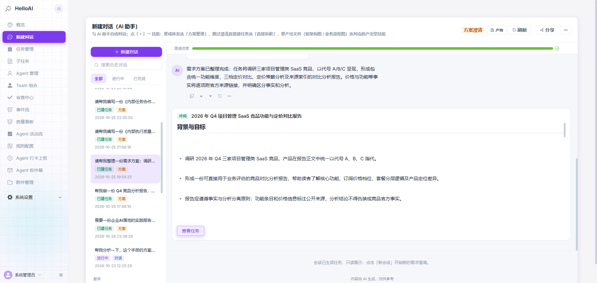 |
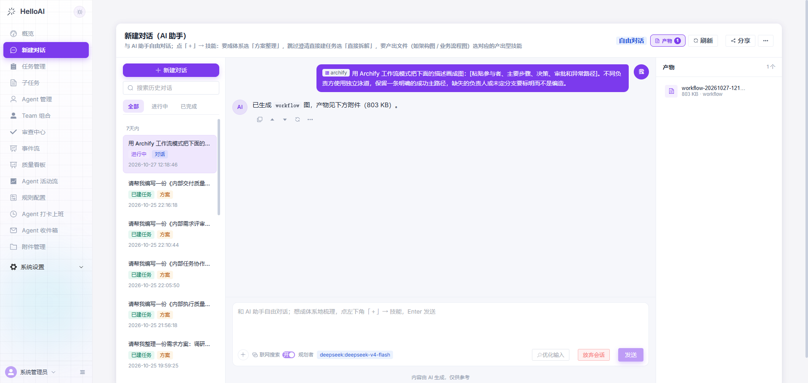 |
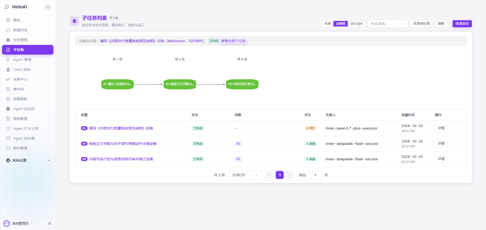 |
| 概览 | 任务管理 | Agent 管理 |
|---|---|---|
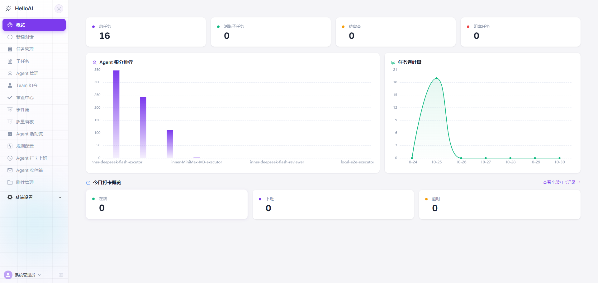 |
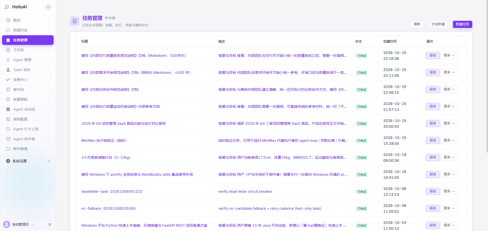 |
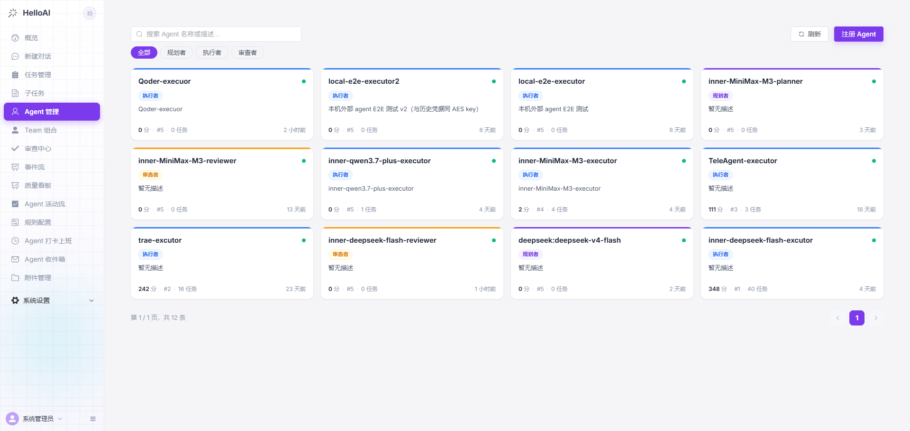 |
| Team 组合 | 执行迭代 | 子任务详情 |
|---|---|---|
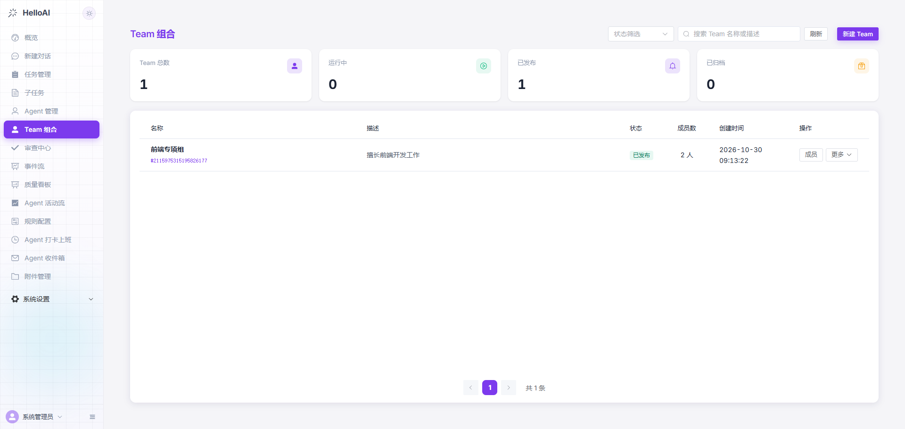 |
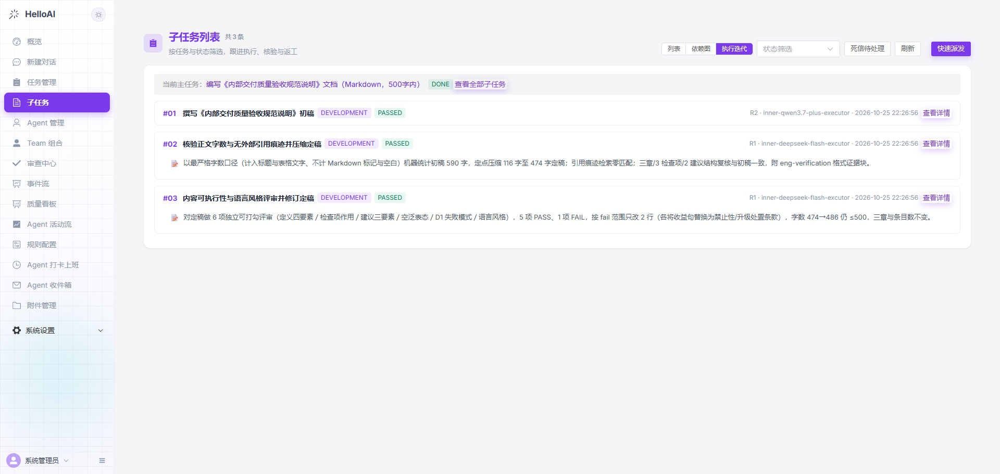 |
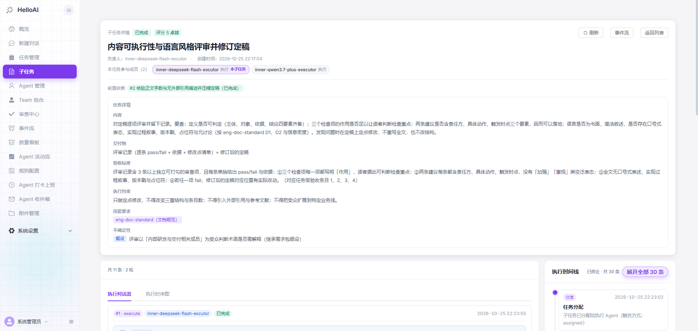 |
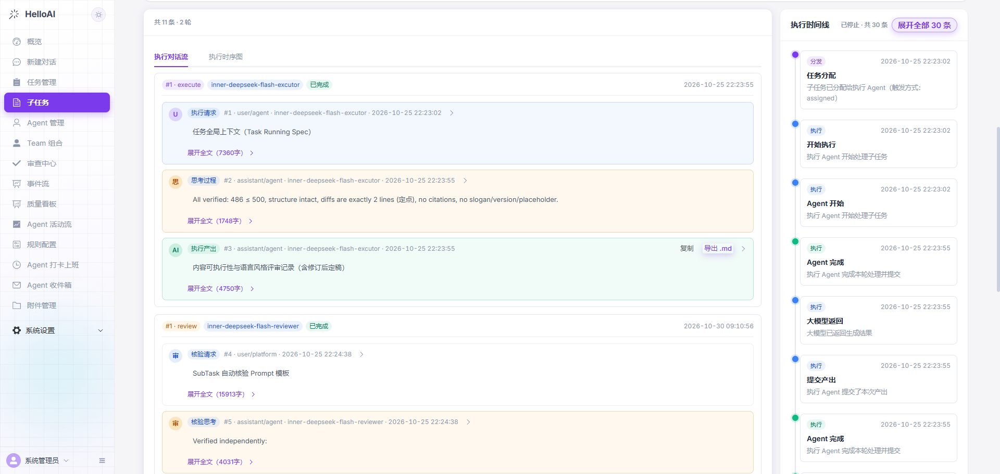 执行对话流 —— 任务上下文 / 思考 / 产出 / 核验全过程 |
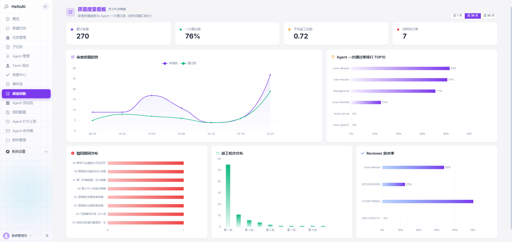 质量看板 —— 一次通过率 / 返工轮次 / 驳回原因 |
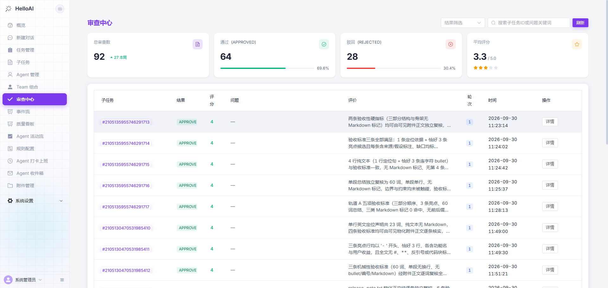 审查中心 —— Reviewer 逐项验收与评分 |
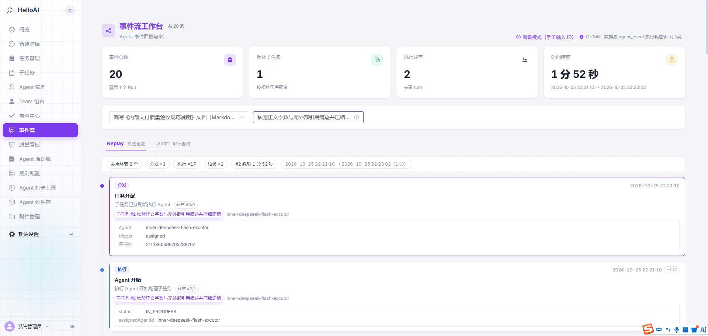 事件流工作台 —— Agent 事件回放与审计追溯 |
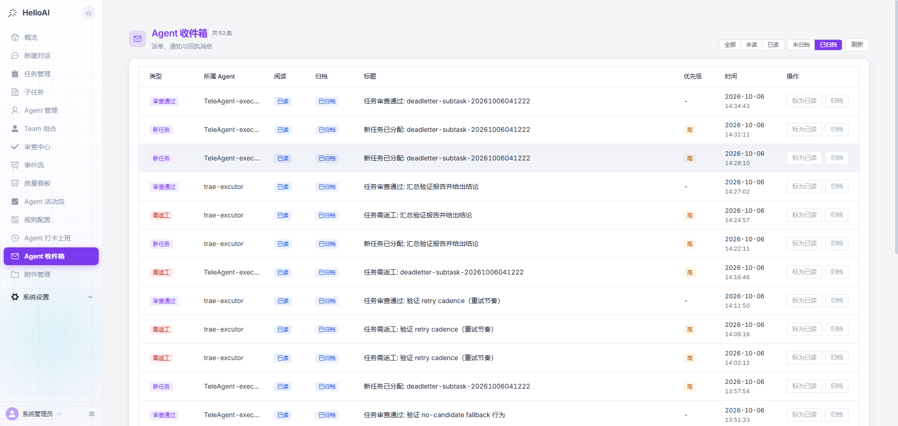 Agent 收件箱 —— 派单 / 通知 / 返工消息投递 |
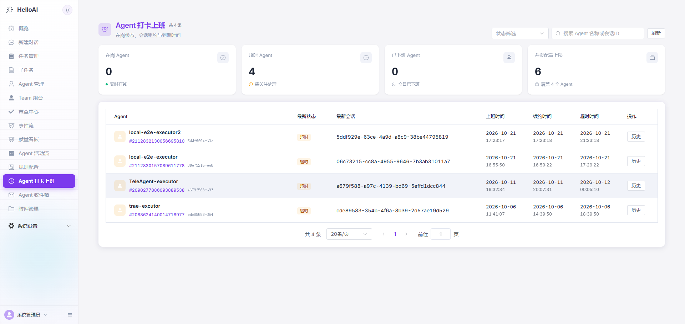 打卡上班 —— 在岗状态 / 会话租约 / 到期时间 |
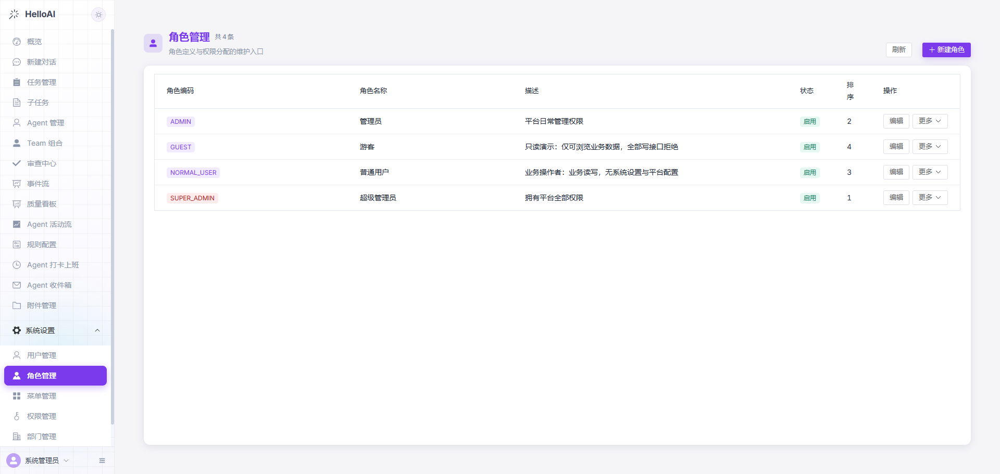 角色管理 —— 超管 / 管理员 / 普通用户 / 游客 |
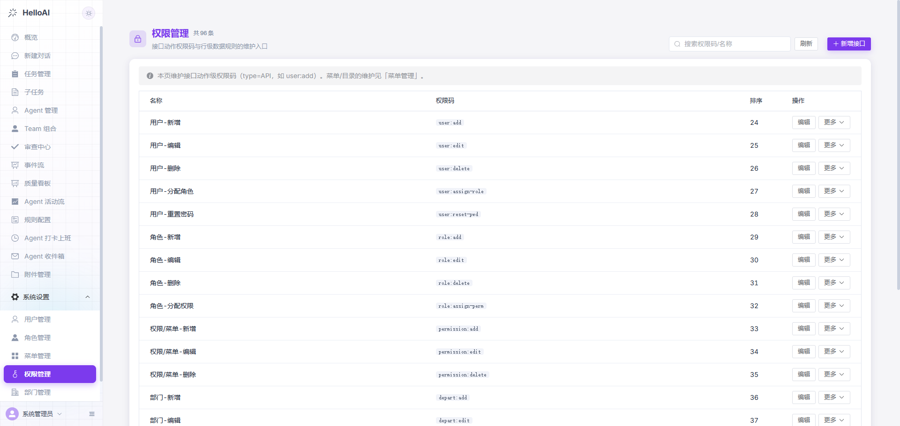 权限管理 —— 接口级动作权限与行级数据规则 |
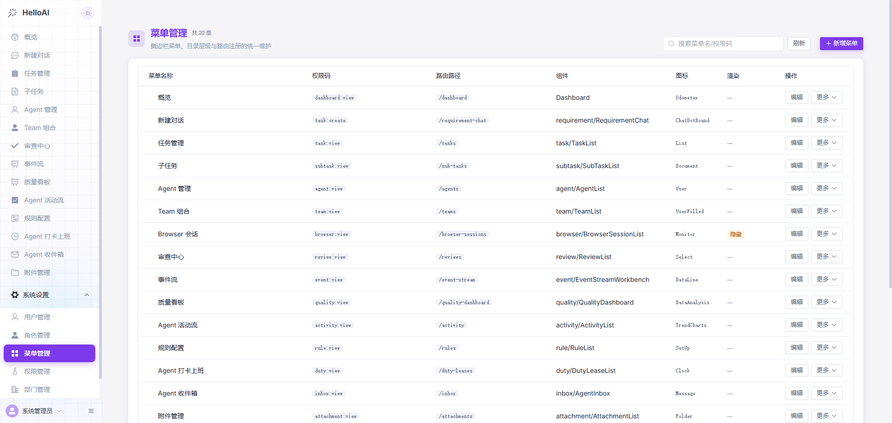 菜单管理 —— 侧边栏 / 目录层级 / 路由注册 |
更多截图见 doc/images/。
📚 文档导航
| 你想做什么 | 去哪里 |
|---|---|
| 了解架构设计 | 文档地图 → 项目基线 / 目标架构 / 设计文档 |
| 接入外部 AI Agent | EXECUTOR 接入指南 — SKILL 生成、MCP 连接、打卡流程 |
| 查外部 Agent 值守手册 | 值守手册 — 值班 / 领任务 / 提交 / 心跳 / 排障 |
| 查看任务状态机 | 平台三级状态机 — 主任务 / 子任务 / 整合报告联动 · 子任务状态机（11 态） — 流转与异常路径 |
| 浏览交互式架构图 | doc/diagrams/html/ — 系统架构 / 平台调度 / 三级状态机 / Planner / Executor / Reviewer，均为可缩放、带图例的 HTML 版 |
| 了解适用边界 | 诚实的能力边界（§2.6） |
| 参与开发 | 代码规范 · 项目基线 |
| 查看迭代记录 | doc/log/ — 按月归档的功能线汇总 |
| English | README.en.md |

🗺️ 路线图
已交付 ✅
- 双模 Planner（CHAT / CLARIFY）+ 联网搜索（总结 + 来源 + 补充检索）+ 自动任务拆解
- 能力感知拆解：技能目录注入 + 三档粒度自适应（细 / 中 / 粗）+ 子任务级技能 / 约束显式化 + 草案人工修订
- 需求包准入：目标 / 范围 / 排除项 / 假设 / 待确认五字段 + 不确定性分级（自证 / 上报人工裁决）
- 弹性调度：外部优先 + 空闲优先 + 值班优先 + LLM 保底 + 熔断降级 + 多外部执行者同台按分排序
- MCP 外部 Agent 接入（13 个工具）+ 值班租约 + 任务感知轮询 + 子任务上下文三通道供给
- Reviewer 双轨纪律制 + 多轮驳回返工（缺失证据清单）+ 双审共识 + 抽检复审
- V2 执行体系：统一事件流（Run / Turn / Step）+ AgentRuntime 八件套 + Replay / Audit 事件流工作台
- 生产级可靠性：Outbox 四态 + 三层幂等 + 死信人工兜底 + Reconcile
- 全链路可视化：依赖 DAG / 时间线 / 时序图 / 事件流工作台 / 质量看板
- 最终整合报告（五态状态机 + 三级容错 L1/L2/L3 + 版本回滚）+ 交付物 zip 一键下载
- RBAC 权限体系：Sa-Token 登录 + 用户 / 角色 / 菜单 / 部门 + 动作级权限码 + 数据权限
- Docker Compose 完全私有化部署
待办 🔜
- Sandbox 真实隔离：Docker / Remote / K8s 执行环境（Provider 契约已就绪；2026-10-09 起为条件触发——平台当前只负责拆分与派单、不执行子任务的具体工作，故暂无可隔离的执行体，触发条件见
doc/HelloAI 目标架构.md§7） - Event 消费面补齐：Recovery 恢复（Fork 分支消费已于 2026-10-09 裁定不做，见
doc/HelloAI 实现差距表.md§7.1.2） - Quality Gate 自动化门槛：Rule + Test + LLM 统一决策
- Agent Fleet 能力化选人：Health / Load / Cost 完整选路 + 外部执行成本回传
- Dynamic Workflow：动态分支与运行期编排（远期）
- 领域模板市场（技术方案 / 代码审查 / 文档生成）
- 浏览器型 Agent（WEB_BROWSER）真实接入链路
- 多租户（数据级租户隔离）
- 调度核心多实例水平扩容（双锁体系已打底）
- 更多外部 Agent 适配器
❓ FAQ
Q：A2A 是什么？HelloAI 和它是什么关系？
A：MCP 让 Agent 会用工具，A2A 让不同厂商的 Agent 能互相协作。协议标准已经有了，但"谁拆活、派给谁、验收什么、失败怎么兜、事后怎么对账"这一层落地机制仍然缺——这正是 HelloAI 补的位置。严格说，HelloAI 不是 A2A 协议规范的实现（Agent 接入走 MCP），补的是协作机制。
Q：与 CrewAI / LangGraph / Dify 有什么区别？
A：一句话：它们解决"如何写 Agent / 编排应用"，HelloAI 解决"如何管 Agent"——任务拆解、弹性调度、验收审计、全链路可视化，且基于 Java 企业级技术栈。
Q：必须部署 Java 环境吗？
A：是。JDK 17 是项目红线，另需 Docker Compose 拉起 PostgreSQL / Redis / RabbitMQ / MinIO 基础设施，步骤见快速开始。
Q：支持哪些大模型？
A：DeepSeek 实测可用，Moonshot / MiniMax / DashScope 预置。启动后在管理端「系统设置 → 模型配置」填写 API Key 即可，加密存储、实时生效、无需重启。
Q：接入外部 AI（Qoder / Trae / Codex CLI / Claude Code）要改它的代码吗？
A：不用。管理端创建 Agent 后一键生成 SKILL 说明，粘贴给外部 AI 执行，即可自动完成注册鉴权 → MCP 连接 → 值班打卡 → 轮询值守。
Q：数据会离开我的服务器吗？
A：支持完全私有化部署，任务、产出物、审计记录全部落在你自己的数据库；LLM API Key 经 AES-GCM 加密存入凭证库。任务内容仅会发送给你自行配置 API Key 的大模型服务。
🤝 参与贡献
- Fork 本仓库
- 新建
feat_xxx或fix_xxx分支 - 改代码前必读
doc/HelloAI_CODE_STYLE.md；涉及调度 / 执行链改动先读doc/design/Agent_Runtime.md与doc/design/Agent_Event_Stream.md - 提交前跑通与改动面相关的
scripts/验证脚本，PR 附上脚本输出
🙏 致谢与参考借鉴
本项目在设计与实现过程中参考了以下开源项目（详细落点见归档文档）：
- OpenMOSS —— Agent 接入层 + 角色建模层 + Prompt/Skill 资产层
- AgentTeams —— 调度内核 + 执行边界 + 状态收敛模型
- DeepSeek Harness ——
eng-*平台技能规范库与 Reviewer 双轨纪律制 - Vibe-Skills —— 工作流运行时设计参考
许可兼容性以各上游 LICENSE 为准。
📄 许可证
Let AI Agents Work as a Team.